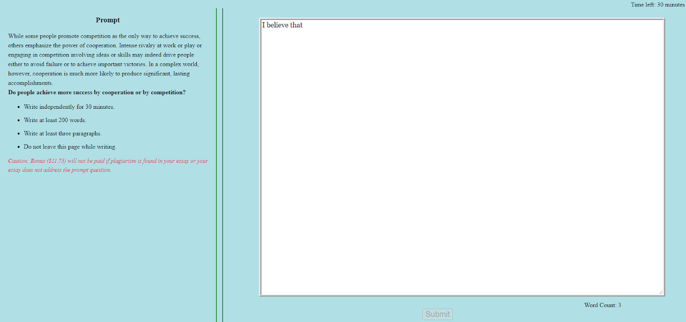

Linking Writing Processes to Writing Quality
Kaggle comp
Alex Avdiushenko
October 11, 2023
Keystroke Data Collection Procedure
- Participants of this project were hired from Amazon Mechanical Turk, a crowdsourcing platform. They were invited to log onto a website that housed a demographic survey, a series of typing tests, an argumentative writing task, and a vocabulary knowledge test. Participants were required to use only computers with a keyboard.
- To make sure participants stayed focused on the task during writing and to track behavior, the writing task page issued warnings whenever the participant was detected inactive for more than 2 minutes or moved to a new window in the process of writing.

Different statistics of writing
- Production rate
- Pauses, revisions
- P-bursts and R-bursts
- Process Variance
Data
- 4 files, 486 MB
- is about 2500 logs of user inputs in train, and about 2500 in the test set
- Each essay was scored on a scale of 0 to 6 with step 0.5
- To prevent reproduction of the essay text, all alphanumeric character inputs have been replaced with the "anonymous" character q; punctuation and other special characters have not been anonymized
- Note that there may be events in the test set that do not occur in the training set
Evaluation
- The goal is to predict overall writing quality
- Regression task: $y_i \in \mathbb{R}$
- Or classification: each essay was scored on a scale of 0 to 6 with step 0.5
- Root Mean Squared Error to score submissions
- Efficiency Prize Evaluation — second track (CPU only) $$ \text{Efficiency} = \frac{\text{RMSE}}{\text{Base}-\min \text{RMSE}} + \frac{\text{RuntimeSeconds}}{32400}$$
- Efficiency LB